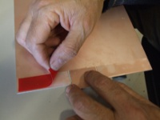
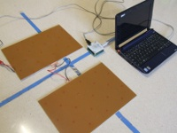
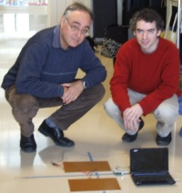

Construction of a modular contact platform using printed circuits
NOTE: This page needs english revision.
Josep Ma Padullés, Xavier de Blas Foix. Chronojump project. Feb 2009.
Description
This platform is created using one side printed circuits boards sized DIN-A4. This boards are rigid and contact is allowed on all its area.
You can join as many pairs of printed circuits as you want and at any bidemensional disposition. Also you can change the disposition easily at any time.
| Adventages | Disadventage |
|---|
- Its a good conductor.
- Its resistant to flexion (fiberglass).
- All circuit area produces contact. There are no false contacts or problems produced by the toes being placed between rods at raising or falling.
- Its modular. Allows to change it's size and disposition at any time easily.
- Its plegable.
- Building little platforms is easy.
- Can be converted fast to a timed circuit moving away one circuit pair from the other.
|
- Its more expensive on platforms sized one meter or more. Is not (economically) profitable for platforms where a big size is needed (1mx1m) or more.
|
Materials
:
- 4 one sided printed circuit boards sized DIN-A4 (300mmx200mm)
- 1 two sided printed circuit board sized 60mmx80mm
- Double slide tape
- Soldering iron
- RCA female connector
- Cables
We bought them at Diotronic store on Barcelona. The reference of the boards was:
- Fibra 1 cara virgen. REF 250516. Placa VIR FV 1C 200x300 (10,9€ cada una +IVA)
- Placa VIR FV 2C 60x80 (1€ +IVA)
- Cinta Pattex doble cara rollo (5,12€ +IVA)
Instructions (click to zoom images)
- Printed board (external view):

- Printed board (internal view):

- First we put the tape on the internal side of the printed circuit board:

- We leave some space at the center of each of the sides to allow other boards to be connected. The board you can see at center is used as a reference for the space needed.

- Here you can see the pair of boards for one foot. The little board you can see at left is not inserted, it's there just to show how will be the bridge between two pair of boards.
At right we wielded a cable at each of the internal sides of the boards. This wieldings are separated in order to not allow contact. Finally, wieldings are connected to a femlae RCA.

- Next we build the bridge between both pair of boards. First we cut the double sided board in four pieces, but in this platform we will use only two. We wield a cable at each of the sides of this double sided boards, having four wields. The bridge will be the ensemble of two pieces of double sided boards and it's wielded cables. That bridge is movable allowing to being inserted and removed doing a little pressure.
Here you can see the bridge inserted in a pair of boards:
- Here you can see the modular platform done and connected to Boscosystem:

- Here you can see the modular platform done and connected to Chronopic3:

- Now there's only a need: buy a plastic cover that can be folded, and optionally add a velcro with a double sided tape.
Update: (2012-Feb-8) Exequiel Mondaca has uploaded a video (in spanish) showing the creation of the modular contact platform using instructions on this page.
You can discuss about this information on the forum: New modular platform. Instruction to build it (Chronojump forum).
Josep Ma Padullés, Xavier de Blas



{kind=link}
{kind=link}
{kind=link}
{kind=link}